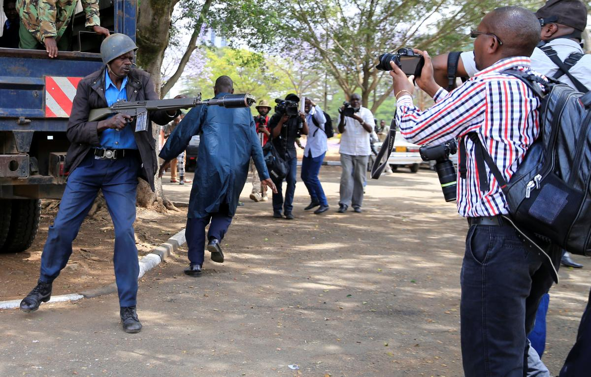

Human Rights Watch (HRW) and ARTICLE 19 Eastern Africa released a joint report on 30 May detailing the litany of abuses against and attempts to repress journalists in Kenya. According to the report, which was the result of 92 interviews with journalists, bloggers, and human rights activists, government officials have allegedly been responsible for widespread intimidation and physical abuse of those working in the media, with at least 23 reporting being physically attacked for their work. HRW and ARTICLE 19 also reported at least 16 direct death threats against journalists for their work in the past couple years, although investigations into whether these threats have turned into any tangible violence are ongoing.
The abuses are apparently an effort to coerce media workers to stop discussing issues which cast an unfavorable outlook on the Kenyan government, such as government corruption and the 2007-2008 post-electoral conflict in the country. However, having a thorough knowledge of such issues is integral for Kenyan voters to make an informed choice during the upcoming general elections this August. According to Otsieno Namwaya, the Africa researcher at Human Rights Watch, for the elections to be "credible and fair," the media must be able to "report on pressing issues of national interest without fear of reprisals." If the Kenyan leadership neglects to ensure the safety of those in the media who publicly discuss the government's flaws, it could reduce the legitimacy of the elections' results and potentially renew violence in the country. Therefore, Namway asserts that it is even in the government's best interest to ensure the safety of journalists and other media workers.
Beyond societal pressure, Kenya also has the legal responsibility to protect journalists' safety and freedom of speech. As a Member State of the UN, Kenya is party to the Universal Declaration of Human Rights and therefore must ensure its citizens enjoy the right to freedom of speech as granted in Article 19. Kenya has also ratified the African Charter on Human and People's Rights, which seeks to protect human rights throughout the African continent. Even if Kenyan authorities are not directly responsible for committing or ordering the abuses, the government is still responsible for protecting journalists' right to freedom of expression under these international legal frameworks and therefore must uphold this duty. HRW has therefore called upon Kenyan President Uhuru Kenyatta to condemn the attacks and seek justice for those who have already become victim to the violence.
You can find the joint report by Human Rights Watch and ARTICLE 19 Eastern Africa, "'Not Worth The Risk': Threats To Free Expression Ahead of Kenya’s 2017 Elections,” here.
By Brianna Roser | 31 May 2017